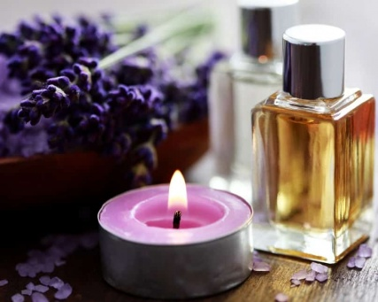
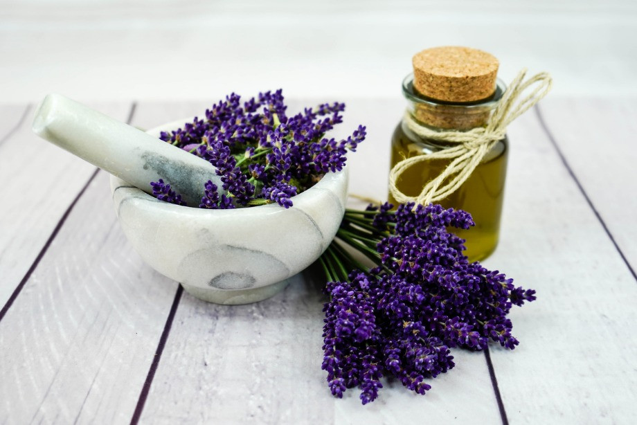

| Виды | Свойства ароматов | Количество запахов |
|---|---|---|
| Бодрящие | Повышают способность к сосредоточению, стимулирует мозговую деятельность. | 8 |
| Освежающие | Стимулирует реакцию, повышают внимание. | 7 |
| Успокаивающие | Снимают раздражительность. | 7 |
| Тонизируюшие | Снимают усталость, расслабляют мышцы. | 6 |
| Антистрессовые | Успокаивают нервы. | 5 |
| Итого: | 33 | |